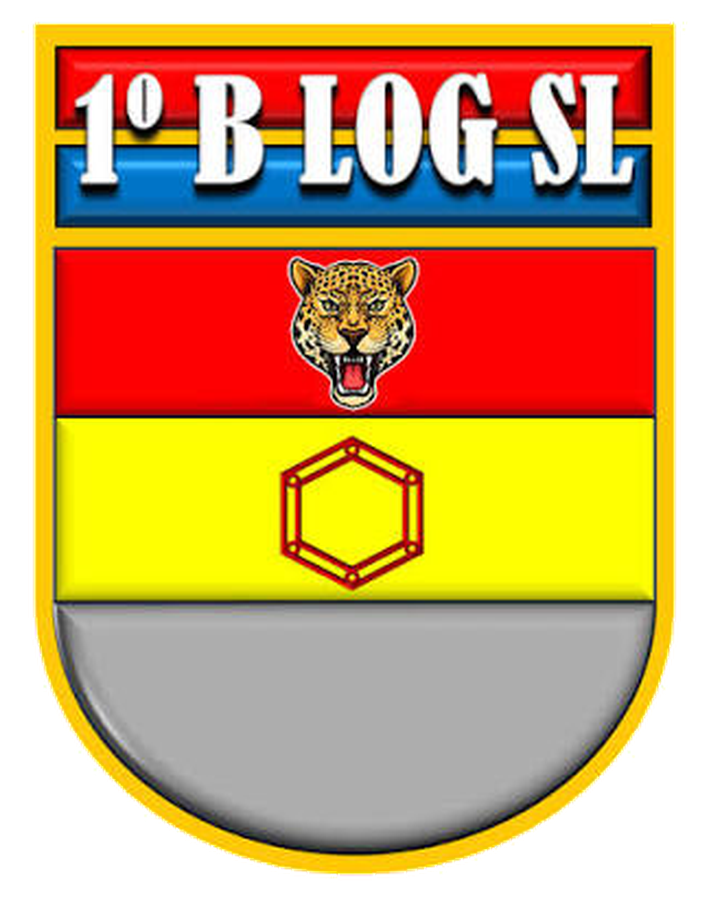
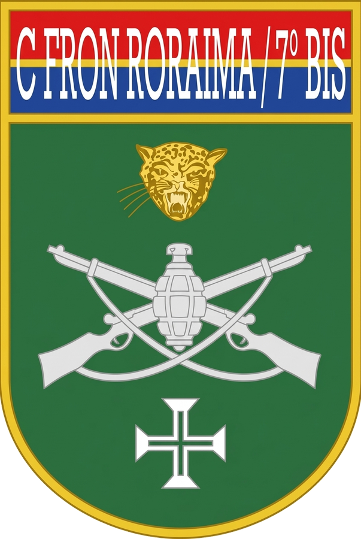
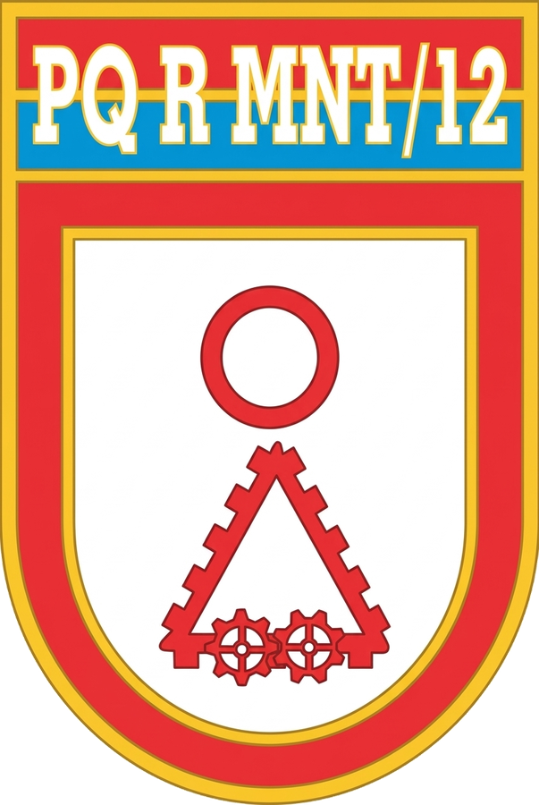
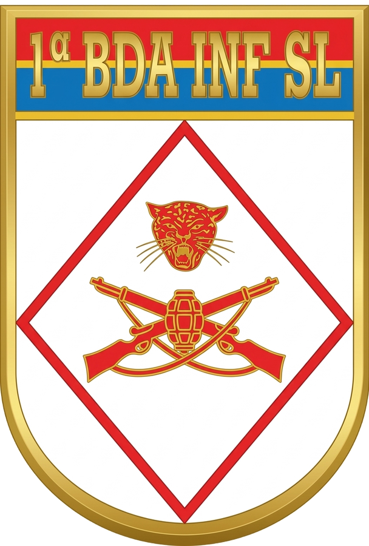
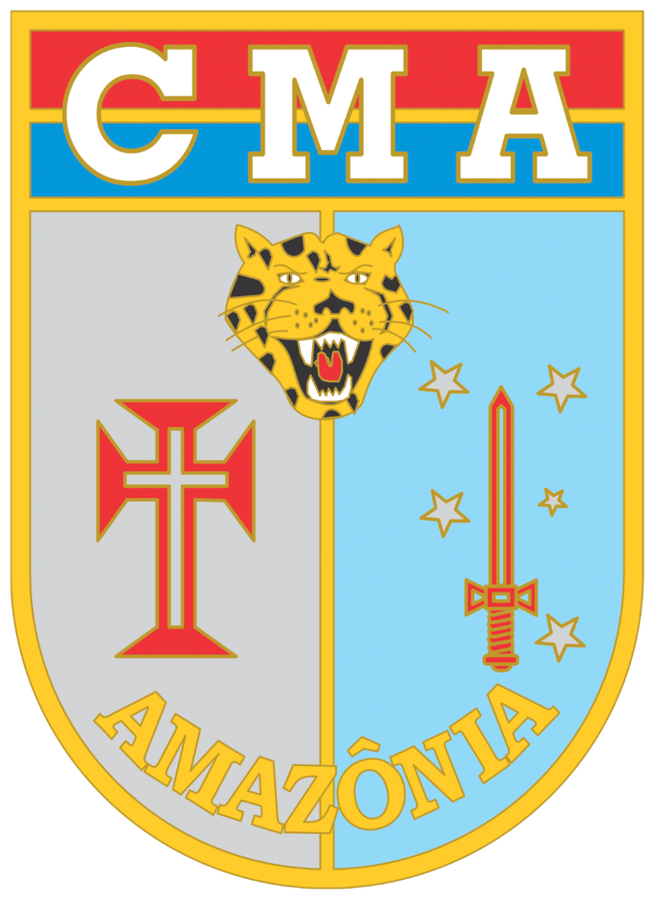
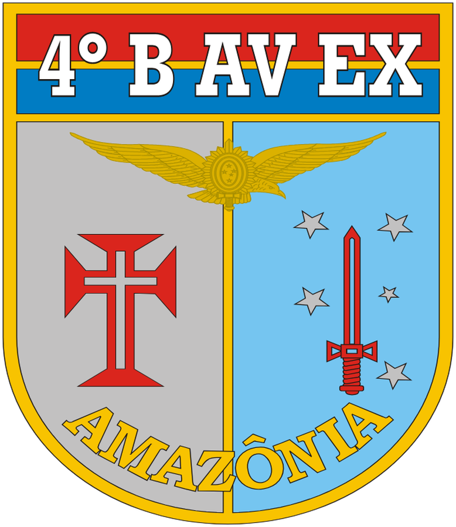

- NC 160504000012026NC406436 (UG 160016): saldo 924.00 em ND genérica 339000 — exige detalhamento antes do empenho
- NC 160504000012026NC406437 (UG 160353): saldo 0.25 em ND genérica 339000 — exige detalhamento antes do empenho
⏱ Dados até 28/09/2026 (3 dias)
Relação dos créditos disponíveis por Nota de Crédito (NC) com descrição completa do objeto e dias em tela (desde o lançamento da NC). Clique em uma linha para abrir a ficha completa. Legenda de idade: ≤30d recente · 31–60d atenção · >60d crítico.
| Fonte | NC | Ação · ND | Descrição do objeto da NC | Recebido em | Crédito em Tela | Idade |
|---|---|---|---|---|---|---|
| 160 | NC 401565 (160539) | 219C · 339030 | AQS DE GLP. OP CONTROLE EMPENHO AT 24ABR26. ESSA UG N O DEVE ALT ND/UGR (ALT EXEC SOMENTE P/ COTER). ATENDE DIEX NR 3… | 25/03/26 | R$ 0,19 | 189d› |
| 160 | NC 406437 (160504) | 21EM · 339000 | (003806-6O BEC)C SUP-DIV SUBS-PLJ-ALIM CAMPANHA. AQS QR EXER COTER. OBS REGRAS BT30.410-01. (OP CATRIMANI II) REF: DIE… | 06/05/26 | R$ 0,25 | 147d› |
| 160 | NC 000016 (160353) | 2000 · 449052 | ↪ ND 449000 ATENDE COTA FUNADOM GND 4. DOC REF DIEX NR 2996 SPAA SGS SDIR DE 9 SET 25. PRAZO DE EMPENHO 30 ABR 26. | 19/06/26 | R$ 410,18 | 103d› |
| 160 | NC 000021 (160353) | 2000 · 339030 | ↪ ND 339000 ATENDE AQS MAT CONSUMO E/OU CONTRATACAO DE SV 6° BEC. DOC REF DIEX Nº 3259-E-10/EM G CMA/EM CMA DE 11MAIO26.PRAZO DE E… | 07/07/26 | R$ 3,35 | 85d› |
| 160 | NC 410796 (160504) | 212B · 339030 | (3806-6O BEC) C SUP-DIV SUBS SOL-QUANTITATIVO DE RANCHO DSP EXTRAORDINARIA. OBS REGRAS DO BT 30.410-01 (ALIMENTACAO (6… | 15/07/26 | R$ 171,62 | 77d› |
| 160 | NC 015367 (160073) | 2000 · 449052 | RECURSO PARA AQUISICAO DE 03 ARES-CONDICIONADOS DE 12.000 BTUS, VISANDO O BEM ESTAR DOS MILITARES EM OPERACAO ALOJADOS… | 26/08/26 | R$ 171,00 | 35d› |
| 160 | NC 426347 (160505) | 212O · 339093 | ATENDE ADITAMENTO 3B BOL DGP 088_31 JUL 2026_PRA AS FAVORECIDO 3 SGT VICTOR HUGO MALHEIROS DA ROCHA 42476977810 REFER… | 27/08/26 | R$ 114,42 | 34d› |
| 160 | NC 427056 (160505) | 2000 · 339033 | ATENDE ADITAMENTO 4D BOL DGP 082_17 JUL 2026_CURSOS FAVORECIDO CAP RALPH SANTOS AMARAL 13138926703 INDENIZA O REFEREN… | 01/09/26 | R$ 1.500,23 | 29d› |
| 160 | NC 017376 (160073) | 21EM · 339039 | DESTAQUE COM A FINALIDADE DE CUSTEAR DESPESAS PARA ATENDER AS NECESSIDADES COM CONCESSIONARIAS (ENERGIA ELETRICA), NO … | 01/09/26 | R$ 0,68 | 29d› |
| 160 | NC 000028 (160353) | 2000 · 339039 | ↪ ND 339000 ATD DESPESAS COM SERVICOS POSTAIS ATE NOVEMBRO 2026 QUE VENCE DEZEMBRO. DOC REF DIEX NR 2996 SPAA SGS SDIR DE 9 SET 2… | 08/09/26 | R$ 0,01 | 22d› |
| 167 | NC 431281 (167505) | 2004 · 339030 | ATENDE DESPESA COM AQUISICAO DE INSUMOS PARA ATENDIMENTOS INTERNOS. QUARTA PARCELA. VEDADA AQUISICAO DE OPME E INSUMOS… | 18/09/26 | R$ 2.690,57 | 12d› |
| 160 | NC 415853 (160504) | 21EM · 339030 | (003806-6O BEC)C SUP-DIV SUBS-PLJ-ALIM CAMPANHA. AQS QR EXER COTER. OBS REGRAS BT30.410-263. (OP CATRIMANI II) REF: DI… | 23/09/26 | R$ 7,20 | 7d› |
| 160 | NC 000035 (160353) | 2000 · 339030 | ↪ ND 339000 ATENDE EXTRAFUNADOM COTAS 10 11 E 12 ATE DEZ 26 COM VENCIMENTO JAN 27. PARA CUSTEIO DE CONTRATOS DE PEQUENO VULTO N… | 23/09/26 | R$ 2,99 | 7d› |
| 160 | NC 006399 (160539) | 21EM · 339030 | AQS MATERIAL DE EXPEDIENTE. OP CATRIMANI II EMPENHO ATE 24 OUT 26. ESSA UG NAO DEVE ALTERAR ND/UGR (ALT EXEC SOMENTE P… | 24/09/26 | R$ 722,17 | 6d› |
| 160 | NC 006647 (160539) | 219C · 339039 | CONTRATACAO DE SERVICOS DE MANUTENCAO DE EQUIPAMENTOS E VIATURAS E PROL DA OP ACOLHIDA. OP ACOLHIDA. EMPENHO ATE 29 OU… | 29/09/26 | R$ 89.655,30 | 1d› |
| 160 | NC 431527 (160505) | 212O · 339093 | ATENDE ADITAMENTO 2C BOL DGP 105_11 SET 26_QSG FAVORECIDO 2 TEN HELCIAS RIBEIRO NEVES 15369738823 REFERENTE PLANEJAME… | 30/09/26 | R$ 83.098,64 | 0d› |
| 160 | NC 431534 (160505) | 212O · 339093 | ATENDE ADITAMENTO 2J BOL DGP 103_04 SET 26_QSG FAVORECIDO 1 TEN WILDE MAIA CAVALCANTE 10442572611 REFERENTE PLANEJAME… | 30/09/26 | R$ 37.816,80 | 0d› |
| 160 | NC 431527 (160505) | 212O · 339093 | ATENDE ADITAMENTO 2C BOL DGP 105_11 SET 26_QSG FAVORECIDO 2 TEN HELCIAS RIBEIRO NEVES 15369738823 REFERENTE PLANEJAME… | 30/09/26 | R$ 22.967,26 | 0d› |
| 160 | NC 431534 (160505) | 212O · 339093 | ATENDE ADITAMENTO 2J BOL DGP 103_04 SET 26_QSG FAVORECIDO 1 TEN WILDE MAIA CAVALCANTE 10442572611 REFERENTE PLANEJAME… | 30/09/26 | R$ 15.010,05 | 0d› |
| 160 | NC 431541 (160505) | 212O · 339093 | ATENDE ADITAMENTO 4H BOL DGP 082_25 JUL 25_CURSOS FAVORECIDO 2 SGT ANTONIO LEANDRO DE ARA JO RODRIGUES 06380101365 RE… | 30/09/26 | R$ 1.718,97 | 0d› |
| TOTAL · 20 Nota(s) de Crédito em tela | R$ 256.061,88 | — | ||||
Notas de crédito com lançamento em 30/09/2026 (último dia com movimento — Dados até 28/09/2026 (3 dias)): 7 NC(s) · Recebido R$ 160.611,72 · Reduções −R$ 342.610,20 · Líquido −R$ 181.998,48. Clique em uma NC para detalhá-la.
| NC | Fonte | Ação | ND | Operação | Valor |
|---|---|---|---|---|---|
| 160505000012026NC431527 | 160 | 212O | 339093 | DESCENTRALIZACAO DE CREDITO | R$ 83.098,64› |
| 160505000012026NC431534 | 160 | 212O | 339093 | DESCENTRALIZACAO DE CREDITO | R$ 37.816,80› |
| 160505000012026NC431527 | 160 | 212O | 339093 | DESCENTRALIZACAO DE CREDITO | R$ 22.967,26› |
| 160505000012026NC431534 | 160 | 212O | 339093 | DESCENTRALIZACAO DE CREDITO | R$ 15.010,05› |
| 160505000012026NC431541 | 160 | 212O | 339093 | DESCENTRALIZACAO DE CREDITO | R$ 1.718,97› |
| 160502000012026NC507237 | 160 | 14T5 | 449039 | ANULACAO DE DESCENTRALIZACAO | −R$ 100.911,00› |
| 160502000012026NC507237 | 160 | 14T5 | 449030 | ANULACAO DE DESCENTRALIZACAO | −R$ 241.699,20› |
Movimentação de NC por dia: recebimentos (+), reduções/anulações (−) e líquido. Clique em um dia para ver as NCs daquele dia.
| Dia | Nº NC | Recebido (+) | Reduções (−) | Líquido |
|---|---|---|---|---|
| 30/09/2026 | 7 | R$ 160.611,72 | −R$ 342.610,20 | −R$ 181.998,48› |
| 29/09/2026 | 1 | R$ 104.655,30 | R$ 0,00 | R$ 104.655,30› |
| 28/09/2026 | 1 | R$ 0,00 | −R$ 0,64 | −R$ 0,64› |
| 25/09/2026 | 3 | R$ 29.998,40 | R$ 0,00 | R$ 29.998,40› |
| 24/09/2026 | 17 | R$ 197.861,63 | R$ 0,00 | R$ 197.861,63› |
| 23/09/2026 | 4 | R$ 18.511,22 | −R$ 3.916,22 | R$ 14.595,00› |
| 22/09/2026 | 3 | R$ 7.980,00 | −R$ 26.470,00 | −R$ 18.490,00› |
| TOTAL | 36 | R$ 519.618,27 | −R$ 372.997,06 | R$ 146.621,21 |
Saldo líquido por célula (Ação · PI · ND): Recebido (líq) − Empenhado = Crédito Disponível em cada linha. "Recebido (líq)" já compensa alterações de ND, detalhamentos e anulações (a alteração não é somada com a NC original). Só aparecem células com saldo > 0; a soma fecha com o total consolidado. Clique em uma linha para ver as notas de crédito da célula com a descrição completa.
| Fonte | Ação | PI | ND | Aplicação | Recebido (líq) | Empenhado | Crédito Disp. |
|---|---|---|---|---|---|---|---|
| 160 | 212O | D6PEINDMV1A | 339093 | INDENIZACOES E RESTITUICOES | R$ 1.049.359,80 | R$ 926.610,97 | R$ 122.748,83› |
| 160 | 219C | A1DTDEFACLH | 339039 | OUTROS SERVICOS DE TERCEIROS - PESSOA JURIDICA | R$ 287.949,25 | R$ 198.293,95 | R$ 89.655,30› |
| 160 | 212O | D6PEINDMV1T | 339093 | INDENIZACOES E RESTITUICOES | R$ 380.565,79 | R$ 342.588,48 | R$ 37.977,31› |
| 167 | 2004 | D8SAFCTUGPD | 339030 | MATERIAL DE CONSUMO | R$ 69.064,70 | R$ 66.374,13 | R$ 2.690,57› |
| 160 | 2000 | IDDSATSPCEB | 339033 | PASSAGENS E DESPESAS COM LOCOMOCAO | R$ 27.030,39 | R$ 25.530,16 | R$ 1.500,23› |
| 160 | 21EM | OCS90001000 | 339030 | MATERIAL DE CONSUMO | R$ 925.808,67 | R$ 925.086,50 | R$ 722,17› |
| 160 | 2000 | I3DAFUNADOM | 449052 | EQUIPAMENTOS E MATERIAL PERMANENTE | R$ 20.149,44 | R$ 19.739,26 | R$ 410,18› |
| 160 | 212B | E6SUSOLA1QR | 339030 | MATERIAL DE CONSUMO | R$ 24.300,00 | R$ 24.128,38 | R$ 171,62› |
| 160 | 2000 | I3DAFOTVOLT | 449052 | EQUIPAMENTOS E MATERIAL PERMANENTE | R$ 6.195,00 | R$ 6.024,00 | R$ 171,00› |
| 160 | 21EM | OCS90001001 | 339030 | MATERIAL DE CONSUMO | R$ 184.890,75 | R$ 184.883,55 | R$ 7,20› |
| 160 | 2000 | I3DAFUNCMA0 | 339030 | MATERIAL DE CONSUMO | R$ 14.000,00 | R$ 13.996,65 | R$ 3,35› |
| 160 | 2000 | I3DAFUNADOM | 339030 | MATERIAL DE CONSUMO | R$ 98.999,36 | R$ 98.996,37 | R$ 2,99› |
| 160 | 21EM | OCS90001002 | 339039 | OUTROS SERVICOS DE TERCEIROS - PESSOA JURIDICA | R$ 56.195,04 | R$ 56.194,36 | R$ 0,68› |
| 160 | 21EM | OCS90001001 | 339000 | APLICACOES DIRETAS | R$ 0,25 | R$ 0,00 | R$ 0,25› |
| 160 | 219C | A1DTDEFCTRL | 339030 | MATERIAL DE CONSUMO | R$ 34.832,00 | R$ 34.831,81 | R$ 0,19› |
| 160 | 2000 | I3DACSPCORR | 339039 | OUTROS SERVICOS DE TERCEIROS - PESSOA JURIDICA | R$ 1.680,00 | R$ 1.679,99 | R$ 0,01› |
| TOTAL · 16 célula(s) com crédito em tela | R$ 256.061,88 | ||||||
| Ação | PI | ND | Aplicação | Recebido (líq) | Empenhado | Crédito Disp. |
|---|---|---|---|---|---|---|
| 212O | D6PEINDMV1A | 339093 | INDENIZACOES E RESTITUICOES | R$ 1.049.359,80 | R$ 926.610,97 | R$ 122.748,83› |
| 219C | A1DTDEFACLH | 339039 | OUTROS SERVICOS DE TERCEIROS - PESSOA JURIDICA | R$ 287.949,25 | R$ 198.293,95 | R$ 89.655,30› |
| 212O | D6PEINDMV1T | 339093 | INDENIZACOES E RESTITUICOES | R$ 380.565,79 | R$ 342.588,48 | R$ 37.977,31› |
| 2000 | IDDSATSPCEB | 339033 | PASSAGENS E DESPESAS COM LOCOMOCAO | R$ 27.030,39 | R$ 25.530,16 | R$ 1.500,23› |
| 21EM | OCS90001000 | 339030 | MATERIAL DE CONSUMO | R$ 925.808,67 | R$ 925.086,50 | R$ 722,17› |
| 2000 | I3DAFUNADOM | 449052 | EQUIPAMENTOS E MATERIAL PERMANENTE | R$ 20.149,44 | R$ 19.739,26 | R$ 410,18› |
| 212B | E6SUSOLA1QR | 339030 | MATERIAL DE CONSUMO | R$ 24.300,00 | R$ 24.128,38 | R$ 171,62› |
| 2000 | I3DAFOTVOLT | 449052 | EQUIPAMENTOS E MATERIAL PERMANENTE | R$ 6.195,00 | R$ 6.024,00 | R$ 171,00› |
| 21EM | OCS90001001 | 339030 | MATERIAL DE CONSUMO | R$ 184.890,75 | R$ 184.883,55 | R$ 7,20› |
| 2000 | I3DAFUNCMA0 | 339030 | MATERIAL DE CONSUMO | R$ 14.000,00 | R$ 13.996,65 | R$ 3,35› |
| 2000 | I3DAFUNADOM | 339030 | MATERIAL DE CONSUMO | R$ 98.999,36 | R$ 98.996,37 | R$ 2,99› |
| 21EM | OCS90001002 | 339039 | OUTROS SERVICOS DE TERCEIROS - PESSOA JURIDICA | R$ 56.195,04 | R$ 56.194,36 | R$ 0,68› |
| 21EM | OCS90001001 | 339000 | APLICACOES DIRETAS | R$ 0,25 | R$ 0,00 | R$ 0,25› |
| 219C | A1DTDEFCTRL | 339030 | MATERIAL DE CONSUMO | R$ 34.832,00 | R$ 34.831,81 | R$ 0,19› |
| 2000 | I3DACSPCORR | 339039 | OUTROS SERVICOS DE TERCEIROS - PESSOA JURIDICA | R$ 1.680,00 | R$ 1.679,99 | R$ 0,01› |
| TOTAL · 15 célula(s) com crédito em tela | R$ 253.371,31 | |||||
| Ação | PI | ND | Aplicação | Recebido (líq) | Empenhado | Crédito Disp. |
|---|---|---|---|---|---|---|
| 2004 | D8SAFCTUGPD | 339030 | MATERIAL DE CONSUMO | R$ 69.064,70 | R$ 66.374,13 | R$ 2.690,57› |
| TOTAL · 1 célula(s) com crédito em tela | R$ 2.690,57 | |||||
⏱ Dados até 28/09/2026 (3 dias)
Relação completa de todas as Notas de Crédito (NC) recebidas pela unidade 6º Batalhão de Engenharia de Construção (6º BEC) no exercício corrente (UASGs 160353 · OGU e 167353 · FEx). Clique em uma linha para abrir a ficha cadastral completa no modal de detalhamento.
| Fonte | NC | Ação · ND | Descrição do objeto da NC | UG Emitente | Recebido em ▼ | Provisão | Crédito Disp. | Status |
|---|---|---|---|---|---|---|---|---|
| OGU | NC 431527 · 160505 | 212O · 339093 | ATENDE ADITAMENTO 2C BOL DGP 105_11 SET 26_QSG FAVORECIDO 2 TEN HELCIAS RIBEIRO NEVES 15369738823 REFERENTE PLANEJAME… | 160505 DEPARTAMENTO GERAL DE … | 30/09/2026 | R$ 106.065,90 | R$ 106.065,90 | Disponível› |
| OGU | NC 431534 · 160505 | 212O · 339093 | ATENDE ADITAMENTO 2J BOL DGP 103_04 SET 26_QSG FAVORECIDO 1 TEN WILDE MAIA CAVALCANTE 10442572611 REFERENTE PLANEJAME… | 160505 DEPARTAMENTO GERAL DE … | 30/09/2026 | R$ 52.826,85 | R$ 52.826,85 | Parcialmente Executada› |
| OGU | NC 431541 · 160505 | 212O · 339093 | ATENDE ADITAMENTO 4H BOL DGP 082_25 JUL 25_CURSOS FAVORECIDO 2 SGT ANTONIO LEANDRO DE ARA JO RODRIGUES 06380101365 RE… | 160505 DEPARTAMENTO GERAL DE … | 30/09/2026 | R$ 1.718,97 | R$ 1.718,97 | Disponível› |
| OGU | NC 507237 · 160502 | 14T5 · 449030 | 24PDRAMZP0005* ATD CNST INFRAESTRUTURA 18 RC MEC. RECOLHIMENTO DE SALDO DA 2026NC504604 (R$ 15.006,88), 2026NC503629 (… | 160502 DEPARTAMENTO DE ENGENH… | 30/09/2026 | −R$ 342.610,20 | R$ 0,00 | Cancelada / Anulada› |
| OGU | NC 006647 · 160539 | 219C · 339039 | CONTRATACAO DE SERVICOS DE MANUTENCAO DE EQUIPAMENTOS E VIATURAS E PROL DA OP ACOLHIDA. OP ACOLHIDA. EMPENHO ATE 29 OU… | 160539 COMANDO DE OPERACOES T… | 29/09/2026 | R$ 104.655,30 | R$ 89.655,30 | Parcialmente Executada› |
| OGU | NC 018210 · 160073 | 2000 · 339000 | RECOLHIMENTO DE SALDO NAO UTILIZADO, CONFORME DIEX Nº 2758-SPAA/SGS/SDIR, DE 21 SET 26. | 160073 DIRETORIA DE GESTAO OR… | 28/09/2026 | −R$ 0,64 | R$ 0,00 | Cancelada / Anulada› |
| OGU | NC 507067 · 160502 | 21A0 · 339030 | CLVI-ENG*MNT RE - OBDC O PERD 10-26 - N SOLIC 2026MNT2209202617090700. NC EME 2026NC003436. EMPH EM ATE 5 DIAS UTEIS -… | 160502 DEPARTAMENTO DE ENGENH… | 25/09/2026 | R$ 9.999,00 | R$ 0,00 | Totalmente Executada› |
| OGU | NC 507070 · 160502 | 21A0 · 339030 | CLVI-ENG*MNT CR - OBDC O PERD 10-26 - N SOLIC 2026MNT2209202617091000. NC EME 2026NC003436. EMPH EM ATE 5 DIAS UTEIS -… | 160502 DEPARTAMENTO DE ENGENH… | 25/09/2026 | R$ 5.000,00 | R$ 0,00 | Totalmente Executada› |
| OGU | NC 507072 · 160502 | 21A0 · 339030 | CLVI-ENG*MNT TORRE ILUMINACAO - OBDC O PERD 10-26 - N SOLIC 2026MNT2409202613052500. NC EME 2026NC003436. EMPH EM ATE … | 160502 DEPARTAMENTO DE ENGENH… | 25/09/2026 | R$ 14.999,40 | R$ 0,00 | Totalmente Executada› |
| OGU | NC 006399 · 160539 | 21EM · 339030 | AQS MATERIAL DE EXPEDIENTE. OP CATRIMANI II EMPENHO ATE 24 OUT 26. ESSA UG NAO DEVE ALTERAR ND/UGR (ALT EXEC SOMENTE P… | 160539 COMANDO DE OPERACOES T… | 24/09/2026 | R$ 1.093,00 | R$ 722,17 | Parcialmente Executada› |
| OGU | NC 006366 · 160539 | 21EM · 449052 | AQS PERFURADOR DE SOLO. OP CATRIMANI II. EMPENHO ATE 24 OUT 26. ESSA UG NAO DEVE ALTERAR ND/UGR (ALT EXEC SOMENTE P/ C… | 160539 COMANDO DE OPERACOES T… | 24/09/2026 | R$ 2.289,88 | R$ 0,00 | Totalmente Executada› |
| OGU | NC 006368 · 160539 | 21EM · 449052 | AQS FRAGMENTADORA DE PAPEL. OP CATRIMANI II. EMPENHO ATE 24 OUT 26. ESSA UG NAO DEVE ALTERAR ND/UGR (ALT EXEC SOMENTE … | 160539 COMANDO DE OPERACOES T… | 24/09/2026 | R$ 5.400,00 | R$ 0,00 | Totalmente Executada› |
| OGU | NC 006369 · 160539 | 21EM · 449052 | AQS IMPRESSORA MULTIFUNCIONAL COLORIDA. OP CATRIMANI II. EMPENHO ATE 24 OUT 26. ESSA UG NAO DEVE ALTERAR ND/UGR (ALT E… | 160539 COMANDO DE OPERACOES T… | 24/09/2026 | R$ 7.856,00 | R$ 0,00 | Totalmente Executada› |
| OGU | NC 006370 · 160539 | 21EM · 449052 | AQS MAQUINA DE LAVAR 15KG. OP CATRIMANI II. EMPENHO ATE 24 OUT 26. ESSA UG NAO DEVE ALTERAR ND/UGR (ALT EXEC SOMENTE P… | 160539 COMANDO DE OPERACOES T… | 24/09/2026 | R$ 5.957,18 | R$ 0,00 | Totalmente Executada› |
| OGU | NC 006371 · 160539 | 21EM · 449052 | AQS REFRIGERADOR VERTICAL 500L. OP CATRIMANI II. EMPENHO ATE 24 OUT 26. ESSA UG NAO DEVE ALTERAR ND/UGR (ALT EXEC SOME… | 160539 COMANDO DE OPERACOES T… | 24/09/2026 | R$ 8.400,00 | R$ 0,00 | Totalmente Executada› |
| OGU | NC 006372 · 160539 | 21EM · 449052 | AQS FRIGOBAR 120L. OP CATRIMANI II. EMPENHO ATE 24 OUT 26. ESSA UG NAO DEVE ALTERAR ND/UGR (ALT EXEC SOMENTE P/ COTER)… | 160539 COMANDO DE OPERACOES T… | 24/09/2026 | R$ 1.790,09 | R$ 0,00 | Totalmente Executada› |
| OGU | NC 006388 · 160539 | 21EM · 339040 | CTT SV INTERNET VIA SATELITE. OP CATRIMANI II EMPENHO ATE 24 OUT 26. ESSA UG NAO DEVE ALTERAR ND/UGR (ALT EXEC SOMENTE… | 160539 COMANDO DE OPERACOES T… | 24/09/2026 | R$ 3.600,00 | R$ 0,00 | Totalmente Executada› |
| OGU | NC 006395 · 160539 | 21EM · 339039 | CTT SV DETETIZACAO . OP CATRIMANI II EMPENHO ATE 24 OUT 26. ESSA UG NAO DEVE ALTERAR ND/UGR (ALT EXEC SOMENTE P/ COTER… | 160539 COMANDO DE OPERACOES T… | 24/09/2026 | R$ 6.300,00 | R$ 0,00 | Totalmente Executada› |
| OGU | NC 006397 · 160539 | 21EM · 339039 | CTT SV MNT EQP RANCHO. OP CATRIMANI II EMPENHO ATE 24 OUT 26. ESSA UG NAO DEVE ALTERAR ND/UGR (ALT EXEC SOMENTE P/ COT… | 160539 COMANDO DE OPERACOES T… | 24/09/2026 | R$ 15.263,39 | R$ 0,00 | Totalmente Executada› |
| OGU | NC 006401 · 160539 | 21EM · 339030 | AQS MATERIAL DE LIMPEZA. OP CATRIMANI II EMPENHO ATE 24 OUT 26. ESSA UG NAO DEVE ALTERAR ND/UGR (ALT EXEC SOMENTE P/ C… | 160539 COMANDO DE OPERACOES T… | 24/09/2026 | R$ 2.364,63 | R$ 0,00 | Totalmente Executada› |
| OGU | NC 006402 · 160539 | 21EM · 339039 | CTT SV MNT EQP ENGENHARIA. OP CATRIMANI II EMPENHO ATE 24 OUT 26. ESSA UG NAO DEVE ALTERAR ND/UGR (ALT EXEC SOMENTE P/… | 160539 COMANDO DE OPERACOES T… | 24/09/2026 | R$ 772,83 | R$ 0,00 | Totalmente Executada› |
| OGU | NC 006403 · 160539 | 21EM · 339030 | AQS MATERIAL DE CONSTRUCAO. OP CATRIMANI II EMPENHO ATE 24 OUT 26. ESSA UG NAO DEVE ALTERAR ND/UGR (ALT EXEC SOMENTE P… | 160539 COMANDO DE OPERACOES T… | 24/09/2026 | R$ 33.413,64 | R$ 0,00 | Totalmente Executada› |
| OGU | NC 006405 · 160539 | 21EM · 339030 | AQS MATERIAL DE CONSTRUCAO. OP CATRIMANI II EMPENHO ATE 24 OUT 26. ESSA UG NAO DEVE ALTERAR ND/UGR (ALT EXEC SOMENTE P… | 160539 COMANDO DE OPERACOES T… | 24/09/2026 | R$ 14.048,76 | R$ 0,00 | Totalmente Executada› |
| OGU | NC 006406 · 160539 | 21EM · 339030 | AQS GENEROS ALIMENTICIOS. OP CATRIMANI II EMPENHO ATE 24 OUT 26. ESSA UG NAO DEVE ALTERAR ND/UGR (ALT EXEC SOMENTE P/ … | 160539 COMANDO DE OPERACOES T… | 24/09/2026 | R$ 48.202,83 | R$ 0,00 | Totalmente Executada› |
| OGU | NC 006410 · 160539 | 21EM · 339030 | AQS MATERIAL DE CONSUMO. OP CATRIMANI II EMPENHO ATE 24 OUT 26. ESSA UG NAO DEVE ALTERAR ND/UGR (ALT EXEC SOMENTE P/ C… | 160539 COMANDO DE OPERACOES T… | 24/09/2026 | R$ 39.578,00 | R$ 0,00 | Totalmente Executada› |
| OGU | NC 006412 · 160539 | 21EM · 339030 | AQS PECAS. OP CATRIMANI II EMPENHO ATE 24 OUT 26. ESSA UG NAO DEVE ALTERAR ND/UGR (ALT EXEC SOMENTE P/ COTER). ATENDE … | 160539 COMANDO DE OPERACOES T… | 24/09/2026 | R$ 1.531,40 | R$ 0,00 | Totalmente Executada› |
| OGU | NC 415853 · 160504 | 21EM · 339030 | (003806-6O BEC)C SUP-DIV SUBS-PLJ-ALIM CAMPANHA. AQS QR EXER COTER. OBS REGRAS BT30.410-263. (OP CATRIMANI II) REF: DI… | 160504 CENTRO DE OBTENCOES DO… | 23/09/2026 | R$ 2.625,00 | R$ 7,20 | Parcialmente Executada› |
| OGU | NC 000035 · 160353 | 2000 · 339000 | DETALHAMENTO DE CREDITO. | 160353 6 BATALHAO DE ENGENHAR… | 23/09/2026 | R$ 0,00 | R$ 2,99 | Detalhamento de ND› |
| OGU | NC 415856 · 160504 | 21EM · 339030 | (003806-6O BEC)C SUP-DIV SUBS-PLJ-ALIM CAMPANHA. AQS QR EXER COTER. OBS REGRAS BT30.410-263. (OP CATRIMANI II) REF: DI… | 160504 CENTRO DE OBTENCOES DO… | 23/09/2026 | R$ 11.970,00 | R$ 0,00 | Totalmente Executada› |
| OGU | NC 000034 · 160353 | 2000 · 339000 | DETALHAMENTO DE CREDITO. | 160353 6 BATALHAO DE ENGENHAR… | 22/09/2026 | R$ 0,00 | R$ 0,00 | Detalhamento de ND› |
| OGU | NC 415627 · 160504 | 2865 · 339030 | (003806-6O BEC) C SUP - DMI - RECOLHIMENTO DE SALDO NAO APLICADO NO PRAZO PREVISTO. | 160504 CENTRO DE OBTENCOES DO… | 22/09/2026 | −R$ 18.490,00 | R$ 0,00 | Cancelada / Anulada› |
| OGU | NC 000472 · 160014 | 212B · 339030 | RECOLHIMENTO DE CREDITO CONFORME DIEX Nº 11008-CL I/SEC SUP/CCOL | 160014 COMANDO 12 REGIAO MILI… | 21/09/2026 | −R$ 0,03 | R$ 0,00 | Cancelada / Anulada› |
| FEx | NC 431281 · 167505 | 2004 · 339030 | ATENDE DESPESA COM AQUISICAO DE INSUMOS PARA ATENDIMENTOS INTERNOS. QUARTA PARCELA. VEDADA AQUISICAO DE OPME E INSUMOS… | 167505 DEPARTAMENTO GERAL DE … | 18/09/2026 | R$ 23.021,57 | R$ 2.690,57 | Parcialmente Executada› |
| OGU | NC 000033 · 160353 | 2000 · 339000 | DETAORC REFERENTE A REQUISICAO NR 36/2026 - ALMOX | 160353 6 BATALHAO DE ENGENHAR… | 17/09/2026 | R$ 0,00 | R$ 0,00 | Detalhamento de ND› |
| OGU | NC 506682 · 160502 | 20X6 · 339030 | 26DSTMDEF004* ATD CONTENCAO VOCOROCA MANAUS-AM. FINS ATD 6 BEC NA AQUISICAO DE MATERIAIS DE CONSUMO. EMPENHO IMEDIATO.… | 160502 DEPARTAMENTO DE ENGENH… | 17/09/2026 | R$ 5.731,60 | R$ 0,00 | Totalmente Executada› |
| OGU | NC 506716 · 160502 | 163Q · 449030 | 160022-BR307.CONSERVA* ATD DSP CONSERVA RODOVIARIA DA BR 307-AM (OP YA-MIRIM II). CFM PEC 20785, DE 14 SET 26. ATENTAR… | 160502 DEPARTAMENTO DE ENGENH… | 17/09/2026 | R$ 4.270,92 | R$ 0,00 | Totalmente Executada› |
| OGU | NC 415370 · 160504 | 21EM · 339030 | CMAT-MOTO-NC003733 ? AQS SUP E INSUMOS P/ MNT VTR NAO BLD. EM PROL DA OP CATRIMANI II. ATD DIEX NO 22460-DIVOPLOG.SECI… | 160504 CENTRO DE OBTENCOES DO… | 17/09/2026 | R$ 16.347,00 | R$ 0,00 | Totalmente Executada› |
| OGU | NC 428979 · 160505 | 212O · 339093 | ATENDE ADITAMENTO 2K BOL DGP 070_19 JUN 26_QSG FAVORECIDO 1 TEN EVERTON SANTANA TUDE 85783302503 REFERENTE PLANEJAMEN… | 160505 DEPARTAMENTO GERAL DE … | 16/09/2026 | R$ 4.069,80 | R$ 0,00 | Totalmente Executada› |
| OGU | NC 506618 · 160502 | 219D · 339015 | B1DECAZULTURQ*ATENDER AQUISICAO DE DIARIAS E PASSAGENS PARA A OPERACAO AZUL TURQUESA, CONFORME DIEX Nº 2020-PEL E CMB … | 160502 DEPARTAMENTO DE ENGENH… | 15/09/2026 | R$ 5.109,76 | R$ 0,00 | Totalmente Executada› |
| OGU | NC 506443 · 160502 | 219D · 339030 | 12FM20* ANULACAO TOTAL DA NC 2026NC505771 DE 27/08/2026 - SOLICITACAO: 202612000235 - ADEQUACAO / PAV. OFICINA I / 1º … | 160502 DEPARTAMENTO DE ENGENH… | 11/09/2026 | −R$ 150.000,00 | R$ 0,00 | Cancelada / Anulada› |
| FEx | NC 401069 · 167086 | 2000 · 339030 | 16735320261-ATENDER DESPESAS COM OS SUBITENS: 33903000 (PRAZO PARA EMPENHO: 25 SET 26 A CONTAR DESTA DATA) | 167086 FUNDO DO EXERCITO | 11/09/2026 | R$ 50.000,00 | R$ 0,00 | Totalmente Executada› |
| OGU | NC 000031 · 160353 | 2000 · 339000 | DETAORC REFERENTE A REQUISICAO NR 37/2026 - ALMOX | 160353 6 BATALHAO DE ENGENHAR… | 10/09/2026 | R$ 0,00 | R$ 0,00 | Detalhamento de ND› |
| OGU | NC 000032 · 160353 | 2000 · 449000 | DETALHAMENTO PARA SUPRIR NECESSIDADES DE AQS DE MATERIAL PERMANENENTE. | 160353 6 BATALHAO DE ENGENHAR… | 10/09/2026 | R$ 0,00 | R$ 0,00 | Detalhamento de ND› |
| OGU | NC 000029 · 160353 | 2000 · 339000 | DETAORC REFERENTE A REQUISICAO NR 06/2026 - FISCAL DE CONTRATO. | 160353 6 BATALHAO DE ENGENHAR… | 09/09/2026 | R$ 0,00 | R$ 0,00 | Detalhamento de ND› |
| OGU | NC 000030 · 160353 | 2000 · 339000 | DETAORC REFERENTE A REQUISICAO NR 03/2026 - FISCAL DE CONTRATO | 160353 6 BATALHAO DE ENGENHAR… | 09/09/2026 | R$ 0,00 | R$ 0,00 | Detalhamento de ND› |
| OGU | NC 000028 · 160353 | 2000 · 339000 | DETAORC REFERENTE A REQUISICAO NR 12/2026 - FISCAL_CTT_CORREIOS | 160353 6 BATALHAO DE ENGENHAR… | 08/09/2026 | R$ 0,00 | R$ 0,01 | Detalhamento de ND› |
| OGU | NC 506173 · 160502 | 21A0 · 339039 | CLVI-ENG*RECOLHIMENTO DE SALDO RESIDUAL. NC DO DEC 2026NC505998, VALOR R$8.920,00. | 160502 DEPARTAMENTO DE ENGENH… | 04/09/2026 | −R$ 20,00 | R$ 0,00 | Cancelada / Anulada› |
| OGU | NC 000027 · 160353 | 2000 · 339000 | DETAORC REFERENTE A REQUISICAO NR 40/2026 - FISC ADM. | 160353 6 BATALHAO DE ENGENHAR… | 03/09/2026 | R$ 0,00 | R$ 0,00 | Detalhamento de ND› |
| OGU | NC 506152 · 160502 | 13YK · 449030 | 160171-BR156.PVM* ATD DSP OBRA BR 156 - EMPENHO IMEDIATO. ATD PEC 20760, DE 02 SET 26. ATENTAR AOS PARECERES DO PEC. -… | 160502 DEPARTAMENTO DE ENGENH… | 03/09/2026 | R$ 125.000,00 | R$ 0,00 | Totalmente Executada› |
| OGU | NC 005866 · 160539 | 21A0 · 339047 | APOIAR CENTROS DE FORMACAO DE CONDUTORES-6º BECEMPENHO ATE 30SET2026. ESSA UG NAO DEVE ALTERAR ND/UGR (ALT EXEC SOMENT… | 160539 COMANDO DE OPERACOES T… | 03/09/2026 | R$ 6.500,00 | R$ 0,00 | Totalmente Executada› |
| TOTAL · 421 Nota(s) de Crédito no histórico | R$ 12.884.069,83 | R$ 256.061,88 | — | |||||
Ranking & Comparativo Consolidado das OMDS
Visão executiva integrada das 9 Organizações Militares da 12ª RM / CMA monitoradas. Acompanhe os indicadores de desempenho, taxa de execução orçamentária (% Empenhado) e créditos em tela.
Auditoria Orçamentária SIAFI & Conciliação Interunidades (MCASP)
1. Escopo Global das OM (OGU Ordinário Anual): Os valores deste ranking consolidam o orçamento anual integral das 9 OM monitoradas (todas as ações do OGU). A 12ª Região Militar recebeu R$ 61.927.089,61, por seu encargo de escalão intermediário (Ação 212B — Alimentação das Forças Armadas: R$ 36.189.785,26, 58% do total da OM).
2. Segregação da Operação Catrimani II (Ação 21EM): Os recursos específicos da Catrimani somam R$ 11.619.895,95 nas OM deste ranking (sendo R$ 1.394.056,23 no 6º BEC e R$ 53.430,00 na 12ª RM). Eles estão apresentados e auditados de forma exclusiva nas abas "🎖️ Operação Catrimani II" e "Visão por Ação Governamental" sem duplicidades.
3. Expurgos de Repasses e Dupla Contagem: A 12ª RM descentralizou R$ 3.135.642,38 em provisões concedidas (dos quais R$ 1.212.851,99 repassados diretamente às outras OM deste relatório). Para expurgar duplicações no Total Consolidado do Comando e espelhar o MCASP/SIAFI, adota-se a Dotação Líquida (Recebida − Concedida: R$ 167.177.713,35) como base oficial de execução orçamentária.
Destaque para as organizações com maior percentual de execução das dotações orçamentárias recebidas no exercício. Clique em uma unidade para detalhar.


Relação completa de todas as OMDS com dados consolidados de OGU e FEx. Ordene por qualquer coluna ou clique no botão para exportar para Excel (.xlsx).
| Pos. | Organização Militar (OMDS) | UASGs | Provisão Recebida | Repasses Cedidos | Dotação Líquida | Empenhado | % Execução | Crédito Disponível | Liquidado | % Liquidação | Pago | Células | Ação |
|---|---|---|---|---|---|---|---|---|---|---|---|---|---|
| 🥇 1º | 6º BEC 6º Batalhão de Engenharia de Construção | 160353 / 167353 | R$ 12.884.069,83 | R$ 0,00 | R$ 12.884.069,83 | R$ 12.628.007,95 | 98.0% | R$ 256.061,88 | R$ 7.581.828,24 | 60.0% | R$ 7.351.669,36 | 421 | |
| 🥈 2º | 1º B Log Sl 1º Batalhão Logístico de Selva | 160907 / 167907 | R$ 4.190.386,65 | R$ 0,00 | R$ 4.190.386,65 | R$ 4.072.358,58 | 97.2% | R$ 118.028,07 | R$ 1.946.624,93 | 47.8% | R$ 1.934.449,36 | 337 | |
| 🥉 3º | 7º BIS Comando de Fronteira Roraima / 7º BIS | 160352 / 167352 | R$ 15.405.498,66 | R$ 0,00 | R$ 15.405.498,66 | R$ 14.936.805,25 | 97.0% | R$ 468.693,41 | R$ 8.715.137,30 | 58.3% | R$ 8.216.233,30 | 526 | |
| 4º |  Pq R Mnt/12 Parque Regional de Manutenção da 12ª RM | 160021 / 167021 | R$ 5.438.133,27 | R$ 0,00 | R$ 5.438.133,27 | R$ 5.159.613,18 | 94.9% | R$ 278.520,09 | R$ 3.152.868,11 | 61.1% | R$ 3.089.886,65 | 356 | |
| 5º |  1ª Bda Inf Sl Comando 1ª Brigada de Infantaria de Selva | 160482 / 167482 | R$ 32.680.019,49 | R$ 0,00 | R$ 32.680.019,49 | R$ 30.673.701,18 | 93.9% | R$ 729.023,48 | R$ 18.622.099,51 | 60.7% | R$ 18.056.570,63 | 1350 | |
| 6º | 1º BIS (AMV) 1º Batalhão de Infantaria de Selva (Amv) | 160006 / 167006 | R$ 4.662.890,76 | R$ 0,00 | R$ 4.662.890,76 | R$ 4.262.228,75 | 91.4% | R$ 400.662,01 | R$ 3.014.981,91 | 70.7% | R$ 2.921.962,51 | 396 | |
| 7º |  Cmdo CMA Comando Militar da Amazônia | 160016 / 167016 | R$ 26.600.955,63 | R$ 0,00 | R$ 26.600.955,63 | R$ 24.083.519,02 | 90.5% | R$ 2.517.436,61 | R$ 14.205.209,34 | 59.0% | R$ 13.824.284,69 | 1730 | |
| 8º |  4º B Av Ex 4º Batalhão de Aviação do Exército | 160007 / 167007 | R$ 6.524.311,83 | R$ 0,00 | R$ 6.524.311,83 | R$ 5.858.430,41 | 89.8% | R$ 665.881,42 | R$ 4.412.268,35 | 75.3% | R$ 4.407.158,88 | 476 | |
| 9º | Cmdo 12ª RM Comando da 12ª Região Militar | 160014 / 167014 | R$ 61.927.089,61 | R$ 3.135.642,38 | R$ 58.791.447,23 | R$ 25.117.637,03 | 42.7% | R$ 6.553.779,02 | R$ 32.107.977,62 | 127.8% | R$ 31.925.892,07 | 1646 | |
| TOTAL CONSOLIDADO DO COMANDO (9 OM) | R$ 170.313.355,73 | R$ 3.135.642,38 | R$ 167.177.713,35 | R$ 126.792.301,35 | 75.8% | R$ 11.988.085,99 | R$ 93.758.995,31 | 73.9% | R$ 91.728.107,45 | 7238 | — | ||
🎖️ Operação Catrimani II — Execução Orçamentária Multi-UGs
Painel executivo oficial de acompanhamento das descentralizações de crédito orçamentário da Ação Governamental 21EM e Planos Internos correlatos. Consolida todas as movimentações financeiras das 9 Unidades Gestoras Executoras da Amazônia, com extrato analítico de empenhos, liquidações e saldos livres disponíveis em tela.
- UG 160482: Recebido − Concedido − Empenhado difere do Disponível em 542164.99
As 15 NCs mais urgentes de 83 com saldo, por prazo (saldo estimado). Use os botões para copiar o texto de cobrança de cada UG.
| UG | NC | ND | Saldo estimado | Dias p/ prazo | Prazo |
|---|---|---|---|---|---|
| 7º BIS UG 160352 | NC003871 | 339040 | R$ 1.033,34 | -63 | VENCIDO · há 63d 🔒 |
| CMDO CMA UG 160016 | NC004391 | 339040 | R$ 1.801,77 | -42 | VENCIDO · há 42d 🔒 |
| 1ª BDA INF SL UG 160482 | NC004611 | 339040 | R$ 5.599,96 | -38 | VENCIDO · há 38d 🔒 |
| 7º BIS UG 160352 | NC004937 | 339040 | R$ 72.000,00 | -26 | VENCIDO · há 26d 🔒 |
| 4º BAVEX UG 160007 | NC004951 | 339030 | R$ 6.146,93 | -26 | VENCIDO · há 26d 🔒 |
| 4º BAVEX UG 160007 | NC004941 | 339030 | R$ 1.500,00 | -26 | VENCIDO · há 26d 🔒 |
| 1ª BDA INF SL UG 160482 | NC004971 | 339039 | R$ 788,57 | -26 | VENCIDO · há 26d 🔒 |
| CMDO CMA UG 160016 | NC004942 | 339039 | R$ 38,80 | -26 | VENCIDO · há 26d 🔒 |
| 1º B LOG SL UG 160907 | NC004954 | 339039 | R$ 0,02 | -26 | VENCIDO · há 26d 🔒 |
| 7º BIS UG 160352 | NC406399 | 339030 | R$ 23.483,43 | -1 | VENCIDO · há 1d 🔒 |
| 4º BAVEX UG 160007 | NC406397 | 339030 | R$ 9.000,00 | -1 | VENCIDO · há 1d 🔒 |
| 1ª BDA INF SL UG 160482 | NC406417 | 339039 | R$ 8.625,65 | -1 | VENCIDO · há 1d 🔒 |
| 7º BIS UG 160352 | NC406407 | 339030 | R$ 6.261,07 | -1 | VENCIDO · há 1d 🔒 |
| 7º BIS UG 160352 | NC406406 | 339030 | R$ 5.750,00 | -1 | VENCIDO · há 1d 🔒 |
| 1ª BDA INF SL UG 160482 | NC406410 | 339030 | R$ 4.984,50 | -1 | VENCIDO · há 1d 🔒 |
- NC NC406436 · UG 160016 · ND 339000: R$ 924,00
- NC NC406437 · UG 160353 · ND 339000: R$ 0,25
Prazos lidos do objeto de cada NC e contados a partir de 01/10/2026 (data desta execução). O saldo por NC é estimado: o Tesouro Gerencial não vincula empenho a NC. Clique em um valor para filtrar o extrato abaixo.
| UG | Vencido | ≤ 7 dias | ≤ 30 dias | Imediato | Sem prazo | > 30 dias | Total |
|---|---|---|---|---|---|---|---|
| 7º BIS UG 160352 | — | — | — | R$ 368.127,72 | |||
| 1ª BDA INF SL UG 160482 | — | — | — | R$ 122.292,64 | |||
| CMDO CMA UG 160016 | — | — | R$ 118.730,39 | ||||
| 1º B LOG SL UG 160907 | — | — | — | — | R$ 50.834,60 | ||
| 4º BAVEX UG 160007 | — | — | — | R$ 23.633,23 | |||
| CMDO 12ª RM UG 160014 | — | — | — | — | — | R$ 23.133,30 | |
| 1º BIS (AMV) UG 160006 | — | — | — | — | R$ 3.088,38 | ||
| 6º BEC UG 160353 | — | — | — | R$ 730,30 | |||
| PQ R MNT/12 UG 160021 | — | — | — | — | — | R$ 6,91 | |
| TOTAL | R$ 168.635,87 | R$ 0,00 | R$ 380.097,12 | R$ 19.482,84 | R$ 142.361,64 | R$ 0,00 | R$ 710.577,47 |
Relação consolidada das 9 Organizações Militares executoras da Operação Catrimani II. Clique em qualquer linha ou crédito para abrir a ficha completa com balanço, despesas por ND e extrato de NCs daquela UG.
| Unidade | Descrição da OM Executora | Recebido | Empenhado | Crédito Disponível | Liquidado | Pago | % Execução |
|---|---|---|---|---|---|---|---|
7º BISUG 160352 | CMDO FRON RR / 7º BIS | R$ 6.835.249,58 | R$ 6.467.121,86 | R$ 368.127,72 | R$ 3.084.164,30 | R$ 2.671.927,42 | |
1ª BDA INF SLUG 160482 | CMDO 1ª BDA INF SL | R$ 1.841.565,00 | R$ 1.177.107,37 | R$ 122.292,64 | R$ 679.957,48 | R$ 678.480,18 | |
6º BECUG 160353 | 6º B E CNST | R$ 1.394.056,23 | R$ 1.393.325,93 | R$ 730,30 | R$ 737.490,53 | R$ 582.040,61 | |
CMDO CMAUG 160016 | CMDO C M A | R$ 558.848,42 | R$ 440.118,03 | R$ 118.730,39 | R$ 193.185,49 | R$ 181.630,06 | |
1º B LOG SLUG 160907 | 1º B LOG SL | R$ 336.173,89 | R$ 285.339,29 | R$ 50.834,60 | R$ 60.538,89 | R$ 57.846,48 | |
4º BAVEXUG 160007 | 4º B AV EX | R$ 327.173,56 | R$ 303.540,33 | R$ 23.633,23 | R$ 194.819,02 | R$ 194.514,07 | |
1º BIS (AMV)UG 160006 | 1º B I S (AMV) | R$ 144.901,71 | R$ 141.813,33 | R$ 3.088,38 | R$ 58.891,06 | R$ 58.891,06 | |
PQ R MNT/12UG 160021 | PQ R MNT/12 | R$ 128.497,56 | R$ 128.490,65 | R$ 6,91 | R$ 4.304,83 | R$ 0,00 | |
CMDO 12ª RMUG 160014 | CMDO 12ª RM | R$ 53.430,00 | R$ 30.296,70 | R$ 23.133,30 | R$ 0,00 | R$ 0,00 | |
| TOTAL CONSOLIDADO · 9 UGs EXECUTORAS | R$ 11.619.895,95 | R$ 10.367.153,49 | R$ 710.577,47 | R$ 5.013.351,60 | R$ 4.425.329,88 | 89.2% | |
A série da Ação 21EM começa em 28/09; as curvas aparecem a partir da 2ª posição distinta.
A operação devolveu R$ 1.925.349,90 em 77 lançamento(s) de anulação. Devolver saldo não é achado negativo: é gestão do crédito que não seria empenhado a tempo.
| Mês | Devolvido | |
|---|---|---|
| 01/2026 | R$ 1.285.096,25 | |
| 02/2026 | R$ 29.673,56 | |
| 03/2026 | R$ 46.841,84 | |
| 04/2026 | R$ 26.306,84 | |
| 05/2026 | R$ 42.872,21 | |
| 06/2026 | R$ 245.190,49 | |
| 07/2026 | R$ 108.711,73 | |
| 08/2026 | R$ 51.397,41 | |
| 09/2026 | R$ 89.259,57 |
| Emitente | Devolvido |
|---|---|
| 160539 COTER | R$ 1.826.252,05 |
| 160504 COEx | R$ 99.097,85 |
Idade = dias desde a emissão da NC, ponderada pelo saldo estimado. O indicador da DGOF (intervalo até o 1º empenho da célula) depende da data da NE e entra com a consulta de empenhos. Metas do COTER não configuradas. Preencha data/metas_coter.json (marcos com de, ate, emp, liq) para ver o desvio por UG; a meta é parâmetro, nunca fixa no código.
| UG | Saldo estimado | Idade média | NC mais antiga | % empenhado | Δ meta emp. | % liquidado | Δ meta liq. |
|---|---|---|---|---|---|---|---|
| 7º BIS | R$ 368.127,72 | 19 d | 92 d NC 003871 | 94.6% | — | 47.7% | — |
| 1ª BDA INF SL | R$ 122.292,64 | 16 d | 69 d NC 004611 | 63.9% | — | 57.8% | — |
| CMDO CMA | R$ 118.730,39 | 13 d | 148 d NC 406436 | 78.8% | — | 43.9% | — |
| 1º B LOG SL | R$ 50.834,60 | 22 d | 154 d NC 406265 | 84.9% | — | 21.2% | — |
| 4º BAVEX | R$ 23.633,23 | 32 d | 56 d NC 004951 | 92.8% | — | 64.2% | — |
| CMDO 12ª RM | R$ 23.133,30 | 8 d | 78 d NC 410772 | 56.7% | — | 0.0% | — |
| 1º BIS (AMV) | R$ 3.088,38 | 5 d | 78 d NC 410776 | 97.9% | — | 41.5% | — |
| 6º BEC | R$ 730,30 | 7 d | 148 d NC 406437 | 99.9% | — | 52.9% | — |
| PQ R MNT/12 | R$ 6,91 | 14 d | 14 d NC 415372 | 100.0% | — | 3.4% | — |
NCs de outras Ações que citam a operação no objeto (diárias, PNR funcional etc.). O saldo exibido é o da célula UG · PI · ND, que é compartilhada com despesas alheias à operação — por isso não entra nos totais.
| UG | Ação · PI | ND | NCs | Recebido (NC) | Empenhado (célula) | Saldo da célula |
|---|---|---|---|---|---|---|
| 167482 CMDO 1ª BDA INF SL (FEx) | 2000 · IXOMOBMAPNR | 339030 | NC000424, NC001123 | R$ 47.726,54 | R$ 0,00 | R$ 47.726,54 |
| 160016 CMDO C M A | 2000 · IDDSATSDCMA | 339015 | NC403649 | R$ 16.500,00 | R$ 0,00 | R$ 16.500,00 |
| 167482 CMDO 1ª BDA INF SL (FEx) | 2000 · IXOMOBMAPNR | 339039 | NC000424 | R$ 10.050,00 | R$ 0,00 | R$ 10.050,00 |
| 160482 CMDO 1ª BDA INF SL | 2000 · IDDSATSDCMA | 339033 | NC415035 | R$ 8.000,00 | R$ 0,00 | R$ 8.000,00 |
| 167482 CMDO 1ª BDA INF SL (FEx) | 2000 · IXAPFUNPNRE | 449052 | NC001123 | R$ 3.830,00 | R$ 0,00 | R$ 3.830,00 |
| 160482 CMDO 1ª BDA INF SL | 2000 · IDDSATSDCMA | 339015 | NC415035 | R$ 2.015,00 | R$ 0,00 | R$ 2.015,00 |
Relação auditada das 606 Notas de Crédito distintas (686 lançamentos de dotação) recebidas pelas 9 UGs executoras no âmbito da Operação Catrimani II. Utilize os filtros interativos de UG, Fonte e Saldo, pesquise em tempo real ou exporte a relação completa para Excel. Clique em qualquer linha para abrir a ficha cadastral no modal.
| Emissão | NC | UG Executora | Ação · PI | Natureza Despesa | Objeto / Finalidade | Recebido | Empenhado | Saldo estimado da NC | Status | Prazo de empenho |
|---|---|---|---|---|---|---|---|---|---|---|
| 28/09/2026 | 160539000012026NC006608 | 160006 1º B I S (AMV) | 21EM · OCS90001000 | 339030 MATERIAL DE CONSUMO | CUSTEAR DESP COM MAT CONS. OP CATRIMANI II. EMPENHO IME... | R$ 16.500,00 | R$ 13.517,16 | R$ 2.982,84 | Parcial | EMPENHO IMEDIATO 🔒 |
| 28/09/2026 | 160539000012026NC006605 | 160016 CMDO C M A | 21EM · OCS90001000 | 339030 MATERIAL DE CONSUMO | RECOLHIMENTO DE CREDITO. . ATENDE DIEX NR 10946 - DGOF/... | −R$ 16.500,00 | R$ 0,00 | R$ 0,00 | Anulada | — |
| 25/09/2026 | 160539000012026NC006466 | 160016 CMDO C M A | 21EM · OCS90001000 | 339033 PASSAGENS E DESPESAS | RECOLHIMENTO DE CREDITO. ATENDE DIEX NR 10858- DGOF/CH ... | −R$ 16.500,00 | R$ 0,00 | R$ 0,00 | Anulada | — |
| 25/09/2026 | 160539000012026NC006467 | 160016 CMDO C M A | 21EM · OCS90001000 | 339030 MATERIAL DE CONSUMO | CUSTEAR DESP COM MAT CONS. OP CATRIMANI II. EMPENHO IME... | R$ 16.500,00 | R$ 0,00 | R$ 16.500,00 | Com Saldo | EMPENHO IMEDIATO 🔒 |
| 24/09/2026 | 160539000012026NC006357 | 160006 1º B I S (AMV) | 21EM · OCS90001000 | 339039 OUTROS SERVICOS DE T | RECOLHIMENTO DE CREDITO NAO APLICADO NA UGE. ATENDE DI... | −R$ 66,75 | R$ 0,00 | R$ 0,00 | Anulada | — |
| 24/09/2026 | 160539000012026NC006382 | 160007 4º B AV EX | 21EM · OCS90001000 | 339030 MATERIAL DE CONSUMO | SUPRIMENTO DE FUNDOS. OP CATRIMANI II EMPENHO ATE 24 OU... | R$ 2.000,00 | R$ 0,00 | R$ 2.000,00 | Com Saldo | VENCE EM ≤30 DIAS · 23d 🔒 |
| 24/09/2026 | 160539000012026NC006382 | 160007 4º B AV EX | 21EM · OCS90001000 | 339039 OUTROS SERVICOS DE T | SUPRIMENTO DE FUNDOS. OP CATRIMANI II EMPENHO ATE 24 OU... | R$ 2.000,00 | R$ 2.000,00 | R$ 0,00 | Empenhada | — |
| 24/09/2026 | 160539000012026NC006383 | 160007 4º B AV EX | 21EM · OCS90001000 | 339033 PASSAGENS E DESPESAS | LOCOMOCAO. OP CATRIMANI II EMPENHO ATE 24 OUT 26. ESSA ... | R$ 30.000,00 | R$ 30.000,00 | R$ 0,00 | Empenhada | — |
| 24/09/2026 | 160539000012026NC006396 | 160007 4º B AV EX | 21EM · OCS90001000 | 339030 MATERIAL DE CONSUMO | AQS GENEROS ALIMENTICIOS. OP CATRIMANI II EMPENHO ATE 2... | R$ 4.000,00 | R$ 0,00 | R$ 4.000,00 | Com Saldo | VENCE EM ≤30 DIAS · 23d 🔒 |
| 24/09/2026 | 160539000012026NC006377 | 160016 CMDO C M A | 21EM · OCS90001000 | 339033 PASSAGENS E DESPESAS | DEST 4º BIM. LOCACAO DE VEICULOS. OP CATRIMANI II EMPEN... | R$ 15.000,00 | R$ 0,00 | R$ 15.000,00 | Com Saldo | VENCE EM ≤30 DIAS · 23d 🔒 |
| 24/09/2026 | 160539000012026NC006378 | 160016 CMDO C M A | 21EM · OCS90001000 | 339033 PASSAGENS E DESPESAS | DEST 4º BIM. LOCOMOCAO. OP CATRIMANI II EMPENHO ATE 24 ... | R$ 16.400,00 | R$ 0,00 | R$ 16.400,00 | Com Saldo | VENCE EM ≤30 DIAS · 23d 🔒 |
| 24/09/2026 | 160539000012026NC006379 | 160016 CMDO C M A | 21EM · OCS90001000 | 339030 MATERIAL DE CONSUMO | DEST 4º BIM. SUPRIMENTO DE FUNDOS. OP CATRIMANI II EMPE... | R$ 5.000,00 | R$ 2.042,14 | R$ 2.957,86 | Parcial | VENCE EM ≤30 DIAS · 23d 🔒 |
| 24/09/2026 | 160539000012026NC006379 | 160016 CMDO C M A | 21EM · OCS90001000 | 339039 OUTROS SERVICOS DE T | DEST 4º BIM. SUPRIMENTO DE FUNDOS. OP CATRIMANI II EMPE... | R$ 5.000,00 | R$ 0,00 | R$ 5.000,00 | Com Saldo | VENCE EM ≤30 DIAS · 23d 🔒 |
| 24/09/2026 | 160539000012026NC006380 | 160016 CMDO C M A | 21EM · OCS90001000 | 339033 PASSAGENS E DESPESAS | DEST 4º BIM. LOCOMOCAO. OP CATRIMANI II EMPENHO ATE 24 ... | R$ 4.439,76 | R$ 0,00 | R$ 4.439,76 | Com Saldo | VENCE EM ≤30 DIAS · 23d 🔒 |
| 24/09/2026 | 160539000012026NC006381 | 160016 CMDO C M A | 21EM · OCS90001000 | 339030 MATERIAL DE CONSUMO | DEST 1º B COM GE SL. SUPRIMENTO DE FUNDOS. OP CATRIMANI... | R$ 2.000,00 | R$ 2.000,00 | R$ 0,00 | Empenhada | — |
| 24/09/2026 | 160539000012026NC006385 | 160016 CMDO C M A | 21EM · OCS90001000 | 339040 SERVICOS DE TECNOLOG | DEST 4º BIM. SV RASTREAMENTO SATELITAL. OP CATRIMANI II... | R$ 17.267,88 | R$ 0,00 | R$ 17.267,88 | Com Saldo | VENCE EM ≤30 DIAS · 23d 🔒 |
| 24/09/2026 | 160539000012026NC006387 | 160016 CMDO C M A | 21EM · OCS90001000 | 339040 SERVICOS DE TECNOLOG | DEST 4º BIM. SV RASTREAMENTO SATELITAL. OP CATRIMANI II... | R$ 5.599,96 | R$ 0,00 | R$ 5.599,96 | Com Saldo | VENCE EM ≤30 DIAS · 23d 🔒 |
| 24/09/2026 | 160539000012026NC006389 | 160016 CMDO C M A | 21EM · OCS90001000 | 339030 MATERIAL DE CONSUMO | DEST 4º BIM. SUPRIMENTO DE FUNDOS. OP CATRIMANI II EMPE... | R$ 5.000,00 | R$ 5.000,00 | R$ 0,00 | Empenhada | — |
| 24/09/2026 | 160539000012026NC006392 | 160016 CMDO C M A | 21EM · OCS90001000 | 339030 MATERIAL DE CONSUMO | DEST 1º B COM GE SL. SUPRIMENTO DE FUNDOS. OP CATRIMANI... | R$ 2.000,00 | R$ 2.000,00 | R$ 0,00 | Empenhada | — |
| 24/09/2026 | 160539000012026NC006394 | 160016 CMDO C M A | 21EM · OCS90001000 | 339039 OUTROS SERVICOS DE T | DEST 1º B COM GE SL. CTT SV MONITORAMENTO E RASTREAMENT... | R$ 4.200,00 | R$ 0,00 | R$ 4.200,00 | Com Saldo | VENCE EM ≤30 DIAS · 23d 🔒 |
| 24/09/2026 | 160539000012026NC006414 | 160016 CMDO C M A | 21EM · OCS90001000 | 339030 MATERIAL DE CONSUMO | ANULACAO DA 2026NC6389, POR ERRO DE DIGITACAO.... | −R$ 5.000,00 | R$ 0,00 | R$ 0,00 | Anulada | — |
| 24/09/2026 | 160539000012026NC006415 | 160016 CMDO C M A | 21EM · OCS90001000 | 339030 MATERIAL DE CONSUMO | ANULACAO DA 2026NC6392, PARA CORRECAO DE DIGITACAO.... | −R$ 2.000,00 | R$ 0,00 | R$ 0,00 | Anulada | — |
| 24/09/2026 | 160539000012026NC006416 | 160016 CMDO C M A | 21EM · OCS90001000 | 339030 MATERIAL DE CONSUMO | DEST CMDO CMA. AQS PECAS EQP INFORMATICA. OP CATRIMANI ... | R$ 7.708,80 | R$ 7.708,80 | R$ 0,00 | Empenhada | — |
| 24/09/2026 | 160539000012026NC006359 | 160021 PQ R MNT/12 | 21EM · OCS90001000 | 339030 MATERIAL DE CONSUMO | RECOLHIMENTO DE CREDITO NAO APLICADO NA UGE. ATENDE DI... | −R$ 32,44 | R$ 0,00 | R$ 0,00 | Anulada | — |
| 24/09/2026 | 160539000012026NC006363 | 160352 CMDO FRON RR / 7º BIS | 21EM · OCS90001000 | 339039 OUTROS SERVICOS DE T | RECOLHIMENTO DE CREDITO NAO APLICADO NA UGE. ATENDE DI... | −R$ 327,09 | R$ 0,00 | R$ 0,00 | Anulada | — |
| TOTAL CONSOLIDADO · 606 NOTAS DE CRÉDITO (686 ITENS) | R$ 11.619.895,95 | R$ 10.367.153,49 | R$ 710.577,47 | — | — | |||||
Saldo estimado da NC. O Tesouro Gerencial não vincula empenho a NC. O saldo exato é o da célula UG · PI · ND; a distribuição entre NCs presume consumo das mais antigas primeiro (o saldo remanescente fica nas NCs mais recentes da célula).
📜 Histórico Consolidado de Notas de Crédito (NC)
Repositório analítico de todas as Notas de Crédito recebidas no exercício pelo 6º Batalhão de Engenharia de Construção (UASGs 160353 OGU e 167353 FEx) e pelas demais Unidades Gestoras executoras da Operação Catrimani II. Pesquise por termos da justificativa, combine filtros por unidade, fonte, ação e período, ou clique em qualquer linha para inspecionar o detalhamento cadastral e financeiro completo no modal.
Relação consolidada de todas as Notas de Crédito do 6º BEC e da Operação Catrimani II (9 UGs no total, OGU e FEx). Utilize a busca rápida, o filtro por Unidade e os demais filtros seletivos para auditar lançamentos. Clique em uma linha para abrir a ficha completa.
| Fonte | Nota de Crédito | Favorecido | Ação · ND | Justificativa / Objeto | Emitente | Recebido em ▼ | Provisão | Crédito Disp. | Status |
|---|---|---|---|---|---|---|---|---|---|
| OGU | NC 431527 · 160505 | 160353 6º BEC | 212O · 339093 | ATENDE ADITAMENTO 2C BOL DGP 105_11 SET 26_QSG FAVORECIDO 2 TEN HELCIAS RIBEIRO NEVES 15369738823 REFERENTE PLANEJAME… | 160505 DEPARTAMENTO GERAL DE … | 30/09/2026 | R$ 106.065,90 | R$ 106.065,90 | Disponível› |
| OGU | NC 431534 · 160505 | 160353 6º BEC | 212O · 339093 | ATENDE ADITAMENTO 2J BOL DGP 103_04 SET 26_QSG FAVORECIDO 1 TEN WILDE MAIA CAVALCANTE 10442572611 REFERENTE PLANEJAME… | 160505 DEPARTAMENTO GERAL DE … | 30/09/2026 | R$ 52.826,85 | R$ 52.826,85 | Parcialmente Executada› |
| OGU | NC 431541 · 160505 | 160353 6º BEC | 212O · 339093 | ATENDE ADITAMENTO 4H BOL DGP 082_25 JUL 25_CURSOS FAVORECIDO 2 SGT ANTONIO LEANDRO DE ARA JO RODRIGUES 06380101365 RE… | 160505 DEPARTAMENTO GERAL DE … | 30/09/2026 | R$ 1.718,97 | R$ 1.718,97 | Disponível› |
| OGU | NC 507237 · 160502 | 160353 6º BEC | 14T5 · 449030 | 24PDRAMZP0005* ATD CNST INFRAESTRUTURA 18 RC MEC. RECOLHIMENTO DE SALDO DA 2026NC504604 (R$ 15.006,88), 2026NC503629 (… | 160502 DEPARTAMENTO DE ENGENH… | 30/09/2026 | −R$ 342.610,20 | R$ 0,00 | Cancelada / Anulada› |
| OGU | NC 006647 · 160539 | 160353 6º BEC | 219C · 339039 | CONTRATACAO DE SERVICOS DE MANUTENCAO DE EQUIPAMENTOS E VIATURAS E PROL DA OP ACOLHIDA. OP ACOLHIDA. EMPENHO ATE 29 OU… | 160539 COMANDO DE OPERACOES T… | 29/09/2026 | R$ 104.655,30 | R$ 89.655,30 | Parcialmente Executada› |
| OGU | NC 006608 · 160539 | 160006 1º BIS (AMV) | 21EM · 339030 | CUSTEAR DESP COM MAT CONS. OP CATRIMANI II. EMPENHO IMEDIATO. ESSA UG NAO DEVE ALTERAR ND/UGR (ALT EXEC SOMENTE P/ COT… | 160539 COMANDO DE OPERACOES T… | 28/09/2026 | R$ 16.500,00 | R$ 2.982,84 | Parcialmente Executada› |
| OGU | NC 018210 · 160073 | 160353 6º BEC | 2000 · 339000 | RECOLHIMENTO DE SALDO NAO UTILIZADO, CONFORME DIEX Nº 2758-SPAA/SGS/SDIR, DE 21 SET 26. | 160073 DIRETORIA DE GESTAO OR… | 28/09/2026 | −R$ 0,64 | R$ 0,00 | Cancelada / Anulada› |
| OGU | NC 006605 · 160539 | 160016 CMDO CMA | 21EM · 339030 | RECOLHIMENTO DE CREDITO. . ATENDE DIEX NR 10946 - DGOF/CH EMP F TER/COTER DE 28 SET 2026. | 160539 COMANDO DE OPERACOES T… | 28/09/2026 | −R$ 16.500,00 | R$ 0,00 | Cancelada / Anulada› |
| OGU | NC 006467 · 160539 | 160016 CMDO CMA | 21EM · 339030 | CUSTEAR DESP COM MAT CONS. OP CATRIMANI II. EMPENHO IMEDIATO. ESSA UG NAO DEVE ALTERAR ND/UGR (ALT EXEC SOMENTE P/ COT… | 160539 COMANDO DE OPERACOES T… | 25/09/2026 | R$ 16.500,00 | R$ 16.500,00 | Disponível› |
| OGU | NC 507067 · 160502 | 160353 6º BEC | 21A0 · 339030 | CLVI-ENG*MNT RE - OBDC O PERD 10-26 - N SOLIC 2026MNT2209202617090700. NC EME 2026NC003436. EMPH EM ATE 5 DIAS UTEIS -… | 160502 DEPARTAMENTO DE ENGENH… | 25/09/2026 | R$ 9.999,00 | R$ 0,00 | Totalmente Executada› |
| OGU | NC 507070 · 160502 | 160353 6º BEC | 21A0 · 339030 | CLVI-ENG*MNT CR - OBDC O PERD 10-26 - N SOLIC 2026MNT2209202617091000. NC EME 2026NC003436. EMPH EM ATE 5 DIAS UTEIS -… | 160502 DEPARTAMENTO DE ENGENH… | 25/09/2026 | R$ 5.000,00 | R$ 0,00 | Totalmente Executada› |
| OGU | NC 507072 · 160502 | 160353 6º BEC | 21A0 · 339030 | CLVI-ENG*MNT TORRE ILUMINACAO - OBDC O PERD 10-26 - N SOLIC 2026MNT2409202613052500. NC EME 2026NC003436. EMPH EM ATE … | 160502 DEPARTAMENTO DE ENGENH… | 25/09/2026 | R$ 14.999,40 | R$ 0,00 | Totalmente Executada› |
| OGU | NC 006466 · 160539 | 160016 CMDO CMA | 21EM · 339033 | RECOLHIMENTO DE CREDITO. ATENDE DIEX NR 10858- DGOF/CH EMP F TER/COTER DE 25SET2026. | 160539 COMANDO DE OPERACOES T… | 25/09/2026 | −R$ 16.500,00 | R$ 0,00 | Cancelada / Anulada› |
| OGU | NC 006398 · 160539 | 160352 7º BIS | 21EM · 339039 | CTT SV MNT GERADORES. OP CATRIMANI II EMPENHO ATE 24 OUT 26. ESSA UG NAO DEVE ALTERAR ND/UGR (ALT EXEC SOMENTE P/ COTE… | 160539 COMANDO DE OPERACOES T… | 24/09/2026 | R$ 118.000,00 | R$ 118.000,00 | Disponível› |
| OGU | NC 006409 · 160539 | 160352 7º BIS | 21EM · 339030 | AQS MATERIAL DE CONSUMO. OP CATRIMANI II EMPENHO ATE 24 OUT 26. ESSA UG NAO DEVE ALTERAR ND/UGR (ALT EXEC SOMENTE P/ C… | 160539 COMANDO DE OPERACOES T… | 24/09/2026 | R$ 62.057,85 | R$ 62.057,85 | Disponível› |
| OGU | NC 006407 · 160539 | 160352 7º BIS | 21EM · 339030 | AQS GENEROS ALIMENTICIOS. OP CATRIMANI II EMPENHO ATE 24 OUT 26. ESSA UG NAO DEVE ALTERAR ND/UGR (ALT EXEC SOMENTE P/ … | 160539 COMANDO DE OPERACOES T… | 24/09/2026 | R$ 39.471,30 | R$ 39.471,30 | Disponível› |
| OGU | NC 006385 · 160539 | 160016 CMDO CMA | 21EM · 339040 | DEST 4º BIM. SV RASTREAMENTO SATELITAL. OP CATRIMANI II EMPENHO ATE 24 OUT 26. ESSA UG NAO DEVE ALTERAR ND/UGR (ALT EX… | 160539 COMANDO DE OPERACOES T… | 24/09/2026 | R$ 17.267,88 | R$ 17.267,88 | Disponível› |
| OGU | NC 006378 · 160539 | 160016 CMDO CMA | 21EM · 339033 | DEST 4º BIM. LOCOMOCAO. OP CATRIMANI II EMPENHO ATE 24 OUT 26. ESSA UG NAO DEVE ALTERAR ND/UGR (ALT EXEC SOMENTE P/ CO… | 160539 COMANDO DE OPERACOES T… | 24/09/2026 | R$ 16.400,00 | R$ 16.400,00 | Disponível› |
| OGU | NC 006411 · 160539 | 160482 1ª BDA INF SL | 21EM · 339030 | DEST 18º R C MEC. AQS MATERIAL DE CONSUMO. OP CATRIMANI II EMPENHO ATE 24 OUT 26. ESSA UG NAO DEVE ALTERAR ND/UGR (ALT… | 160539 COMANDO DE OPERACOES T… | 24/09/2026 | R$ 15.885,60 | R$ 15.885,60 | Disponível› |
| OGU | NC 006377 · 160539 | 160016 CMDO CMA | 21EM · 339033 | DEST 4º BIM. LOCACAO DE VEICULOS. OP CATRIMANI II EMPENHO ATE 24 OUT 26. ESSA UG NAO DEVE ALTERAR ND/UGR (ALT EXEC SOM… | 160539 COMANDO DE OPERACOES T… | 24/09/2026 | R$ 15.000,00 | R$ 15.000,00 | Disponível› |
| OGU | NC 006365 · 160539 | 160482 1ª BDA INF SL | 21EM · 449052 | AQS EQUIPAMENTO RADIO. OP CATRIMANI II. EMPENHO ATE 24 OUT 26. ESSA UG NAO DEVE ALTERAR ND/UGR (ALT EXEC SOMENTE P/ CO… | 160539 COMANDO DE OPERACOES T… | 24/09/2026 | R$ 13.200,00 | R$ 13.200,00 | Disponível› |
| OGU | NC 006386 · 160539 | 160482 1ª BDA INF SL | 21EM · 339033 | LOCOMOCAO. OP CATRIMANI II EMPENHO ATE 24 OUT 26. ESSA UG NAO DEVE ALTERAR ND/UGR (ALT EXEC SOMENTE P/ COTER). ATENDE … | 160539 COMANDO DE OPERACOES T… | 24/09/2026 | R$ 10.018,00 | R$ 10.018,00 | Parcialmente Executada› |
| OGU | NC 006390 · 160539 | 160352 7º BIS | 21EM · 339040 | CTT SV INTERNET VIA SATELITE. OP CATRIMANI II EMPENHO ATE 24 OUT 26. ESSA UG NAO DEVE ALTERAR ND/UGR (ALT EXEC SOMENTE… | 160539 COMANDO DE OPERACOES T… | 24/09/2026 | R$ 9.600,00 | R$ 9.600,00 | Disponível› |
| OGU | NC 006413 · 160539 | 160352 7º BIS | 21EM · 339030 | AQS INSUMOS PARA MOTOR POPA. OP CATRIMANI II EMPENHO ATE 24 OUT 26. ESSA UG NAO DEVE ALTERAR ND/UGR (ALT EXEC SOMENTE … | 160539 COMANDO DE OPERACOES T… | 24/09/2026 | R$ 9.331,20 | R$ 9.331,20 | Disponível› |
| OGU | NC 006391 · 160539 | 160482 1ª BDA INF SL | 21EM · 339040 | DEST 10º GAC SL. CTT SV INTERNET VIA SATELITE. OP CATRIMANI II EMPENHO ATE 24 OUT 26. ESSA UG NAO DEVE ALTERAR ND/UGR … | 160539 COMANDO DE OPERACOES T… | 24/09/2026 | R$ 8.000,00 | R$ 8.000,00 | Disponível› |
| OGU | NC 006408 · 160539 | 160352 7º BIS | 21EM · 339030 | AQS GAS DE COZINHA. OP CATRIMANI II EMPENHO ATE 24 OUT 26. ESSA UG NAO DEVE ALTERAR ND/UGR (ALT EXEC SOMENTE P/ COTER)… | 160539 COMANDO DE OPERACOES T… | 24/09/2026 | R$ 5.750,00 | R$ 5.750,00 | Disponível› |
| OGU | NC 006387 · 160539 | 160016 CMDO CMA | 21EM · 339040 | DEST 4º BIM. SV RASTREAMENTO SATELITAL. OP CATRIMANI II EMPENHO ATE 24 OUT 26. ESSA UG NAO DEVE ALTERAR ND/UGR (ALT EX… | 160539 COMANDO DE OPERACOES T… | 24/09/2026 | R$ 5.599,96 | R$ 5.599,96 | Disponível› |
| OGU | NC 006379 · 160539 | 160016 CMDO CMA | 21EM · 339039 | DEST 4º BIM. SUPRIMENTO DE FUNDOS. OP CATRIMANI II EMPENHO ATE 24 OUT 26. ESSA UG NAO DEVE ALTERAR ND/UGR (ALT EXEC SO… | 160539 COMANDO DE OPERACOES T… | 24/09/2026 | R$ 5.000,00 | R$ 5.000,00 | Disponível› |
| OGU | NC 006380 · 160539 | 160016 CMDO CMA | 21EM · 339033 | DEST 4º BIM. LOCOMOCAO. OP CATRIMANI II EMPENHO ATE 24 OUT 26. ESSA UG NAO DEVE ALTERAR ND/UGR (ALT EXEC SOMENTE P/ CO… | 160539 COMANDO DE OPERACOES T… | 24/09/2026 | R$ 4.439,76 | R$ 4.439,76 | Disponível› |
| OGU | NC 006394 · 160539 | 160016 CMDO CMA | 21EM · 339039 | DEST 1º B COM GE SL. CTT SV MONITORAMENTO E RASTREAMENTO. OP CATRIMANI II EMPENHO ATE 24 OUT 26. ESSA UG NAO DEVE ALTE… | 160539 COMANDO DE OPERACOES T… | 24/09/2026 | R$ 4.200,00 | R$ 4.200,00 | Disponível› |
| OGU | NC 006384 · 160539 | 160352 7º BIS | 21EM · 339033 | FRETAMENTO AEREO. OP CATRIMANI II EMPENHO ATE 24 OUT 26. ESSA UG NAO DEVE ALTERAR ND/UGR (ALT EXEC SOMENTE P/ COTER). … | 160539 COMANDO DE OPERACOES T… | 24/09/2026 | R$ 332.655,00 | R$ 4.145,54 | Parcialmente Executada› |
| OGU | NC 006396 · 160539 | 160007 4º BAVEX | 21EM · 339030 | AQS GENEROS ALIMENTICIOS. OP CATRIMANI II EMPENHO ATE 24 OUT 26. ESSA UG NAO DEVE ALTERAR ND/UGR (ALT EXEC SOMENTE P/ … | 160539 COMANDO DE OPERACOES T… | 24/09/2026 | R$ 4.000,00 | R$ 4.000,00 | Disponível› |
| OGU | NC 006404 · 160539 | 160352 7º BIS | 21EM · 339039 | CTT SV MNT GERADOR. OP CATRIMANI II EMPENHO ATE 24 OUT 26. ESSA UG NAO DEVE ALTERAR ND/UGR (ALT EXEC SOMENTE P/ COTER)… | 160539 COMANDO DE OPERACOES T… | 24/09/2026 | R$ 3.942,00 | R$ 3.942,00 | Disponível› |
| OGU | NC 006400 · 160539 | 160482 1ª BDA INF SL | 21EM · 339039 | DEST 18º R C MEC. CTT SV GRAFICOS. OP CATRIMANI II EMPENHO ATE 24 OUT 26. ESSA UG NAO DEVE ALTERAR ND/UGR (ALT EXEC SO… | 160539 COMANDO DE OPERACOES T… | 24/09/2026 | R$ 3.108,00 | R$ 3.108,00 | Disponível› |
| OGU | NC 006379 · 160539 | 160016 CMDO CMA | 21EM · 339030 | DEST 4º BIM. SUPRIMENTO DE FUNDOS. OP CATRIMANI II EMPENHO ATE 24 OUT 26. ESSA UG NAO DEVE ALTERAR ND/UGR (ALT EXEC SO… | 160539 COMANDO DE OPERACOES T… | 24/09/2026 | R$ 5.000,00 | R$ 2.957,86 | Parcialmente Executada› |
| OGU | NC 006382 · 160539 | 160007 4º BAVEX | 21EM · 339030 | SUPRIMENTO DE FUNDOS. OP CATRIMANI II EMPENHO ATE 24 OUT 26. ESSA UG NAO DEVE ALTERAR ND/UGR (ALT EXEC SOMENTE P/ COTE… | 160539 COMANDO DE OPERACOES T… | 24/09/2026 | R$ 2.000,00 | R$ 2.000,00 | Disponível› |
| OGU | NC 006399 · 160539 | 160353 6º BEC | 21EM · 339030 | AQS MATERIAL DE EXPEDIENTE. OP CATRIMANI II EMPENHO ATE 24 OUT 26. ESSA UG NAO DEVE ALTERAR ND/UGR (ALT EXEC SOMENTE P… | 160539 COMANDO DE OPERACOES T… | 24/09/2026 | R$ 1.093,00 | R$ 722,17 | Parcialmente Executada› |
| OGU | NC 006366 · 160539 | 160353 6º BEC | 21EM · 449052 | AQS PERFURADOR DE SOLO. OP CATRIMANI II. EMPENHO ATE 24 OUT 26. ESSA UG NAO DEVE ALTERAR ND/UGR (ALT EXEC SOMENTE P/ C… | 160539 COMANDO DE OPERACOES T… | 24/09/2026 | R$ 2.289,88 | R$ 0,00 | Totalmente Executada› |
| OGU | NC 006368 · 160539 | 160353 6º BEC | 21EM · 449052 | AQS FRAGMENTADORA DE PAPEL. OP CATRIMANI II. EMPENHO ATE 24 OUT 26. ESSA UG NAO DEVE ALTERAR ND/UGR (ALT EXEC SOMENTE … | 160539 COMANDO DE OPERACOES T… | 24/09/2026 | R$ 5.400,00 | R$ 0,00 | Totalmente Executada› |
| OGU | NC 006369 · 160539 | 160353 6º BEC | 21EM · 449052 | AQS IMPRESSORA MULTIFUNCIONAL COLORIDA. OP CATRIMANI II. EMPENHO ATE 24 OUT 26. ESSA UG NAO DEVE ALTERAR ND/UGR (ALT E… | 160539 COMANDO DE OPERACOES T… | 24/09/2026 | R$ 7.856,00 | R$ 0,00 | Totalmente Executada› |
| OGU | NC 006370 · 160539 | 160353 6º BEC | 21EM · 449052 | AQS MAQUINA DE LAVAR 15KG. OP CATRIMANI II. EMPENHO ATE 24 OUT 26. ESSA UG NAO DEVE ALTERAR ND/UGR (ALT EXEC SOMENTE P… | 160539 COMANDO DE OPERACOES T… | 24/09/2026 | R$ 5.957,18 | R$ 0,00 | Totalmente Executada› |
| OGU | NC 006371 · 160539 | 160353 6º BEC | 21EM · 449052 | AQS REFRIGERADOR VERTICAL 500L. OP CATRIMANI II. EMPENHO ATE 24 OUT 26. ESSA UG NAO DEVE ALTERAR ND/UGR (ALT EXEC SOME… | 160539 COMANDO DE OPERACOES T… | 24/09/2026 | R$ 8.400,00 | R$ 0,00 | Totalmente Executada› |
| OGU | NC 006372 · 160539 | 160353 6º BEC | 21EM · 449052 | AQS FRIGOBAR 120L. OP CATRIMANI II. EMPENHO ATE 24 OUT 26. ESSA UG NAO DEVE ALTERAR ND/UGR (ALT EXEC SOMENTE P/ COTER)… | 160539 COMANDO DE OPERACOES T… | 24/09/2026 | R$ 1.790,09 | R$ 0,00 | Totalmente Executada› |
| OGU | NC 006388 · 160539 | 160353 6º BEC | 21EM · 339040 | CTT SV INTERNET VIA SATELITE. OP CATRIMANI II EMPENHO ATE 24 OUT 26. ESSA UG NAO DEVE ALTERAR ND/UGR (ALT EXEC SOMENTE… | 160539 COMANDO DE OPERACOES T… | 24/09/2026 | R$ 3.600,00 | R$ 0,00 | Totalmente Executada› |
| OGU | NC 006395 · 160539 | 160353 6º BEC | 21EM · 339039 | CTT SV DETETIZACAO . OP CATRIMANI II EMPENHO ATE 24 OUT 26. ESSA UG NAO DEVE ALTERAR ND/UGR (ALT EXEC SOMENTE P/ COTER… | 160539 COMANDO DE OPERACOES T… | 24/09/2026 | R$ 6.300,00 | R$ 0,00 | Totalmente Executada› |
| OGU | NC 006397 · 160539 | 160353 6º BEC | 21EM · 339039 | CTT SV MNT EQP RANCHO. OP CATRIMANI II EMPENHO ATE 24 OUT 26. ESSA UG NAO DEVE ALTERAR ND/UGR (ALT EXEC SOMENTE P/ COT… | 160539 COMANDO DE OPERACOES T… | 24/09/2026 | R$ 15.263,39 | R$ 0,00 | Totalmente Executada› |
| OGU | NC 006401 · 160539 | 160353 6º BEC | 21EM · 339030 | AQS MATERIAL DE LIMPEZA. OP CATRIMANI II EMPENHO ATE 24 OUT 26. ESSA UG NAO DEVE ALTERAR ND/UGR (ALT EXEC SOMENTE P/ C… | 160539 COMANDO DE OPERACOES T… | 24/09/2026 | R$ 2.364,63 | R$ 0,00 | Totalmente Executada› |
| OGU | NC 006402 · 160539 | 160353 6º BEC | 21EM · 339039 | CTT SV MNT EQP ENGENHARIA. OP CATRIMANI II EMPENHO ATE 24 OUT 26. ESSA UG NAO DEVE ALTERAR ND/UGR (ALT EXEC SOMENTE P/… | 160539 COMANDO DE OPERACOES T… | 24/09/2026 | R$ 772,83 | R$ 0,00 | Totalmente Executada› |
| OGU | NC 006403 · 160539 | 160353 6º BEC | 21EM · 339030 | AQS MATERIAL DE CONSTRUCAO. OP CATRIMANI II EMPENHO ATE 24 OUT 26. ESSA UG NAO DEVE ALTERAR ND/UGR (ALT EXEC SOMENTE P… | 160539 COMANDO DE OPERACOES T… | 24/09/2026 | R$ 33.413,64 | R$ 0,00 | Totalmente Executada› |
| OGU | NC 006405 · 160539 | 160353 6º BEC | 21EM · 339030 | AQS MATERIAL DE CONSTRUCAO. OP CATRIMANI II EMPENHO ATE 24 OUT 26. ESSA UG NAO DEVE ALTERAR ND/UGR (ALT EXEC SOMENTE P… | 160539 COMANDO DE OPERACOES T… | 24/09/2026 | R$ 14.048,76 | R$ 0,00 | Totalmente Executada› |
| TOTAL · 987 Nota(s) de Crédito no histórico | R$ 23.124.767,55 | R$ 965.909,05 | — | ||||||